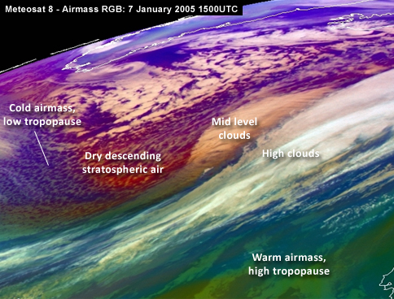
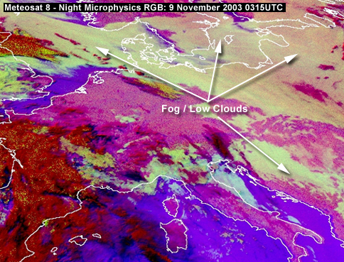
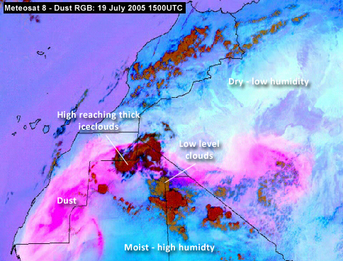

|
Vis 0.8
|
|
VIS - VISible: 0.5 - 0.9 micrometre
The satellite receives that part of the sun radiation which is reflected by the earth surface or by cloudiness. It is a so-called window channel which means that radiation is not significantly absorbed by the gases in the troposphere; this means in other words that it is possible to look as though through a window downward to the radiating surface which can be earth surface or cloud tops. Daytime cloud-mapping and albedo determination.
Different grey shades in this VIS channel represent different values of albedo:
| Bright values |
High albedo |
Thick clouds. Land surfaces |
| Grey values |
Low albedo |
Thin translucent clouds |
| Dark values |
No reflection |
Water and vegetation |
|
|
IR 10.8
|
|
IR - InfraRed: 10.5 - 12.5 micrometre
The satellite receives radiation which is emitted by the earth and the clouds because of their temperature. IR is a window channel, as is VIS, and with the same consequences. Day and night cloud-mapping and determination of surface temperature.
Different grey shades in the IR channel represent different temperatures of the radiating surface which can be the earth surface or the cloud tops. The grey shades presented in the IR images are reversed (white becomes black) to get a similar appearance to the VIS image:
| Bright values |
Low temperatures |
Cold (high) cloud tops |
| Grey values |
Middle temperatures |
Middle cloud tops |
| Dark values |
Warm temperatures |
Hot land or sea surface |
|
|
WV 6.2
|
|
WV - Water Vapour
The satellite receives radiation which is emitted by the water vapour in the upper troposphere (approximately above 600 hPa up to 300 hPa). The WV channel represents an absorption measurement of the WV absorption band. This means that radiation from below 600 hPa is absorbed by the WV in the layer above which according to the radiation laws (Kirchhoff) becomes a radiating surface itself.
Different grey shades in the WV channel represent different WV content above 600 hPa. High upper level WV (bright) help us to identify the location and orientation of jet axes. The dry areas (dark) are a sign of cyclogenesis as stratospheric (dry) air is protruding down:
| Bright values |
Liquid water |
Clouds |
| Grey values |
Water vapour |
Water vapour with varying intensity |
| Dark values |
Very low water vapour |
Dry upper troposphere |
|
|
Airmass
|
|
Airmass is an RGB composite based upon data from infrared and water vapour channels from Meteosat Second Generation. It is designed and tuned to monitor the evolution of cyclones, in particular rapid cyclogenesis, jet streaks and PV (potential vorticity) anomalies (appear reddish in the image).
Due to the incorporation of the water vapour and ozone channels, its usage at high satellite viewing angles is limited. The Airmass RGB is composed from data from a combination of the SEVIRI WV6.2, WV7.3, IR9.7 and IR10.8 channels and can thus be used day and night.
- Midlevel clouds (orange/brown)
- High clouds (white)
- Jet (red)
- PV anomaly (red)
- Cold Airmass (high O3 concentration) (purple/blue)
- Warm Airmass (low O3 concentration) (green/blue)

|
|
Day Natural Colors RGB
|
|
Natural colour RGB shows you the Earth as how you would expect it from space with the zones of vegetation in greenish and the desert areas appearing in reddish colour.
The clouds appear from white to cyan. Water clouds with small droplets have large reflectance at all three channels and hence appear whitish, while snow cover and ice clouds appear cyan.
- Water clouds (white)
- Ice clouds and snow cover (cyan)
- Vegetation (green)
- Deserts (red/pink)
|
|
HRV
|
|
High resolution visible provides extreme good details of different features. Best used for detection of low clouds and fog. Especially valley fog can be monitored quite well with this RGB.
- Convection (white and bright)
- High Clouds (blue)
- Low clouds and fog (yellow)
|
|
Day Microphysics RGB
|
|
The Day Microphysics RGB was inherited from Rosenfeld and Lensky (1998).
The VIS0.8 reflectance in red approximates the cloud optical depth and amount of cloud water and ice.
The IR3.9 solar reflectance in green is a qualitative measure for cloud particle size and phase.
The IR10.8 brightness temperature modulates the blue.
This color scheme is useful for cloud analysis, convection, fog, snow, and fires.
- Convection (orange to red)
- High Clouds (blue)
- Low clouds and fog (yellow)
- Snow (pink)
- Forest fire (cyan)
|
|
Night Microphysics RGB
|
|
The Night Microphysics product is an RGB composite based upon the IR3.9 and the window channels of Meteosat Second Generation satellite.
For fog/low-clouds the IR10.8 - IR3.9 yields a BTD of +6 to +10K which is much higher as opposed to the IR10.8 - IR8.7 BTD used in the 24 hour Microphysics RGB. It is thus better to monitor the evolution of fog/low stratus. Other (secondary) applications are the detection of fires and cloud classification in general.
However! Due to the CO2 absorption in the IR3.9 channel the use of this RGB is not suitable for high latitudes due to limb cooling. Another restriction resides in the fact that for cold scenes (i.e. -20°C and lower) the IR3.9 channel tends to become noisy and produces grain.
- Low clouds and fog (yellow)
- High and midlevel clouds (red)
- Bare ground (pink)
- Sea (purple)

|
|
Dust
|
|
Dust is an RGB composite based upon infrared channel data from the Meteosat Second Generation satellite. It is designed to monitor the evolution of dust storms (pink) during both day and night. The Dust RGB is composed from data from a combination of the SEVIRI IR8.7, IR10.8 and IR12.0 channels. Other applications are moisture boundaries and SO2 plumes emitted by Volcanoes.
- Dust (pink)
- Thick iceclouds (red)
- Cirrus (black/blue)
- Low clouds and fog (yellow)

|
|
Convection
|
|
The severe storm RGB is probably de most difficult RGB to interpret. The bare ground and sea appears in blue shades whereas the convective cells appear in shades of red and yellow colours.
The yellow cell contains the highest updrafts because indicates high reflection of small ice particles. The particles in severe updrafts have less time to collide and merge to become bigger.
- Highest updrafts (yellow)
- Severe updrafts (red)
- Bare ground and sea (blue)
|